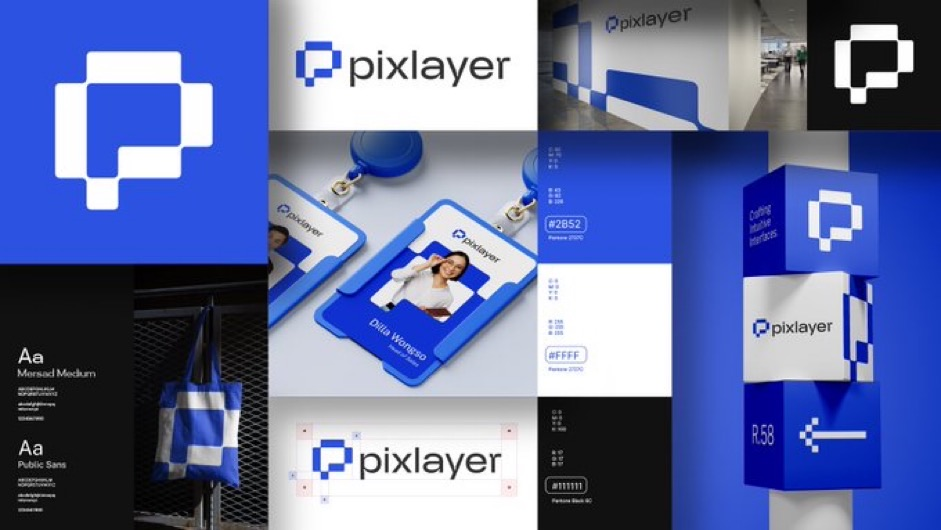
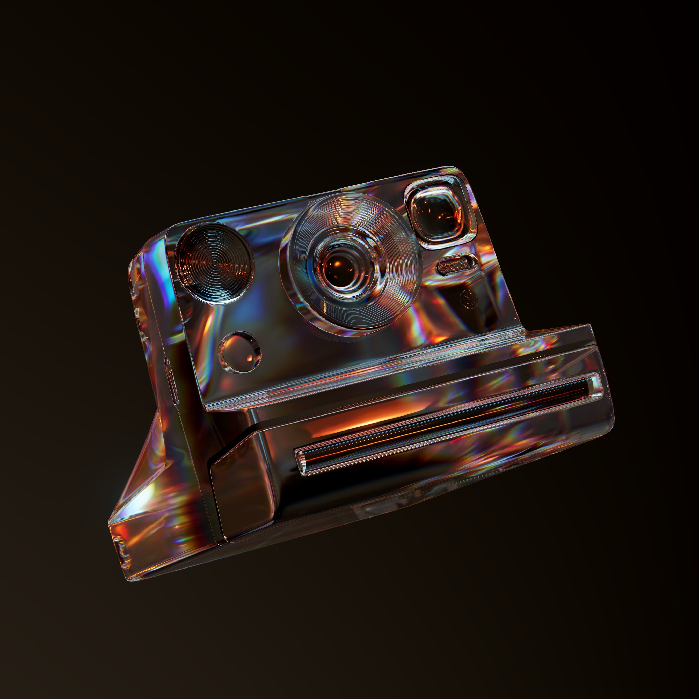

I like to go to Archillect, Behance, or twitter to find inspiration cause
I follow a lot of artists there that I admire.
I really admire a logo designer called Fattahzuni. This designer makes
extremely impressive and well thought out logos. And the ability to create
a brand around it is something that I really admire. Their skill to create
a latger system around a main mark is something that takes years to develop
and I want to be as good as them that day.

The motion designer Vlad is an artist that really speaks to me. His use of
color and light is something that I have really connected with since I
discovered him. I’m hoping to one day be able to use color like he does
in a two dimensional way.

George Bokhua is my favorite designer. His logos are works of art in my
opinion. They are perfectly balanced and simple but not to the point where
they feel plain. Below is a pattern he designed.